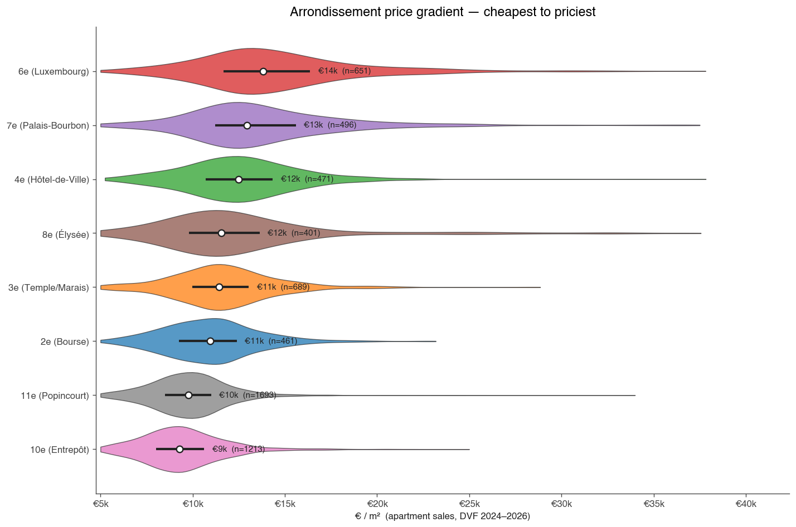
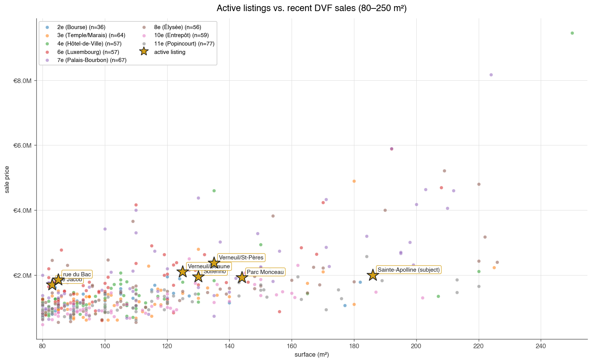
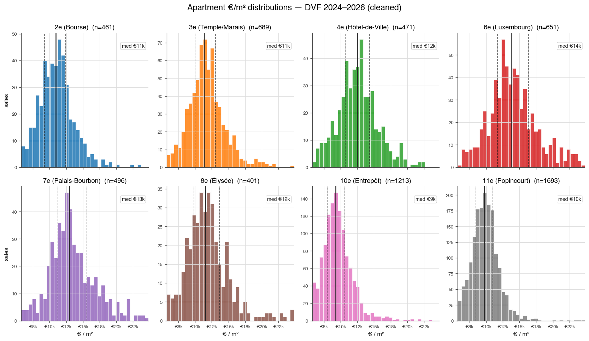

📖 How to find the best deals — read me first
Rows in light green are genuine value candidates: verdict = underpriced AND €/m² ≥ €5,000 (i.e. not a data error). Start there.
The verdict in the rightmost column is the asking €/m² compared to recorded DVF transactions in the same arrondissement and surface band. Think of it as "is the seller asking inside the recent-sale range for this size + location?"
| underpriced | ≥8% below the IQR floor — investigate closely |
| below-band | Below p25 — likely a real handicap (north, low floor, condition) or a deal |
| in-band | Inside p25–p75 — fair for the size class in this arrondissement |
| above-band | Above p75 — typical for renovated / exceptional units |
| overpriced | >8% above p75 — needs strong condition/floor/view justification |
To find the best candidates:
- Confirm
€/m² min ≥ 5,000in the filters above — this hides data errors (viager mislabels, partial-ownership listings, bad scrapes). Anything below €5k/m² in Paris is almost certainly not a real deal. - Filter the Verdict column to
underpriced+below-band(hold ⌘/Ctrl to multi-select). - Click "Δ vs median" header to sort ascending — the steepest discounts to DVF median surface first.
- Optionally filter Arrondissement to your shortlist (e.g. 3rd, 6th, 7th) if you have a geographic preference.
- Click any row to expand its full expert analysis: strengths, concerns, photo-condition signals, raw description.
The caveats DVF can't capture:
- Condition is the dominant variable. DVF doesn't know if a unit is a wreck or a piano nobile. Photo signals (in the row detail) help, but only an on-site visit settles it.
- Floor, exposure (north vs south), view, street noise — none are in DVF. A "below-band" verdict often reflects these handicaps, not an actual discount.
- The
data_quality: "search-results-extract"tag on most listings means surface/price were parsed from listing cards — confirm before serious interest.
Click the 📊 charts below to see how each arrondissement's price distribution stacks up. Methodology in dvf_analysis.md; financial model in yield_model.md.
📊 Market context charts (click to expand)



| Arr | Property | Price | Surface | €/m² | Band median | Δ vs median | Verdict |
|---|